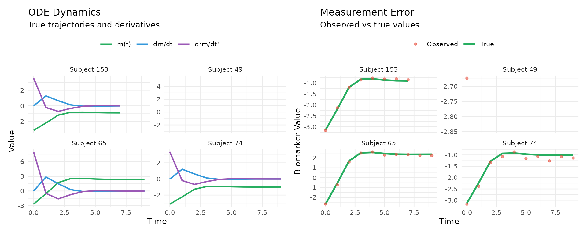

Simulation Setup
The sim dataset was generated using a joint ODE
framework with the following structure:
Longitudinal Process:
The observed biomarker measurements are: v_{ij} = m_i(t_{ij}) + b_i + \epsilon_{ij}
where the true biomarker trajectory m_i(t) evolves according to:
\ddot{m}_i(t) = \beta_1 m_i(t) + \beta_2 \dot{m}_i(t) + \beta_3 + \beta_4 x_{i1} + \beta_5 x_{i2} + \beta_6 t
with b_i \sim \mathcal{N}(0, \sigma_b^2) (random intercept) and \epsilon_{ij} \sim \mathcal{N}(0, \sigma_e^2) (measurement error).
Survival Process:
The hazard function incorporates biomarker dynamics: \lambda_i(t) = \lambda_0(t) \exp\{\alpha_1 m_i(t) + \alpha_2 \dot{m}_i(t) + \alpha_3 \ddot{m}_i(t) + \phi_1 w_{i1} + \phi_2 w_{i2} + b_i\}
where \lambda_0(t)=8 is the baseline hazard and \alpha = (\alpha_1, \alpha_2, \alpha_3) captures the association with biomarker value, velocity, and acceleration.
#> True Parameters:
#> Hazard: α = [0.6, 1.0, -1.5], φ = [0.8, -1.2]
#> ODE: β = [-1.0, -0.6, 0.0, -0.8, 0.5, 0.4]
#> Variance: σ_e = 0.1, σ_b = 0.1
#>
#> Dataset: 100 subjects, 1010 observations, 77% eventsODE Dynamics

The left panel shows the complete ODE dynamics for four randomly selected subjects, illustrating how the biomarker value, velocity, and acceleration evolve over time. The right panel demonstrates the impact of random intercept and measurement error by comparing the true biomarker trajectories (lines) with the observed measurements (points).
#> Variance Components:
#> Biomarker: 0.965
#> Velocity: 0.142
#> Acceleration: 0.155
#>
#> Pairwise Correlations:
#> ρ(Biomarker, Velocity): 0.461
#> ρ(Biomarker, Acceleration): -0.234
#> ρ(Velocity, Acceleration): 0.148The variance hierarchy and correlation structure reflect the fundamental properties of the ODE system. Unlike independent variables in traditional models, these components are mechanistically linked through differential equations, creating intrinsic dependencies that capture the true dynamics of biomarker evolution.
Model Comparison
We compare our proposed method against existing approaches:
| Model | Method Type | Data Source | Key Features |
|---|---|---|---|
| JointODE | Proposed | Noisy observations | ODE-based; estimates m(t), ṁ(t), m̈(t) |
| JSM | Baseline | Noisy observations | Linear mixed effects; only models m(t) |
| Time-varying Cox (Oracle) | Upper bound | True ODE values + b_i | MPLE benchmark with true values |
The Oracle model uses the true biomarker trajectory, derivatives, and random effects at observed time points. While it has perfect information, it approximates the time-varying covariates using piecewise linear interpolation rather than modeling the continuous ODE dynamics.
Based on 100 simulation replicates, we evaluate the estimation accuracy of the association parameters (\alpha_1, \alpha_2, \alpha_3) and baseline covariate effects (\phi_1, \phi_2) using Bias, Empirical Standard Error (ESE), Average Standard Error (ASE), and Coverage Probability (CP) of 95% confidence intervals.
| Parameter | Model | Bias | ESE | ASE | CP (%) |
|---|---|---|---|---|---|
| Baseline Covariates | |||||
| φ₁ = 0.8 | TVCox | 0.027 | 0.150 | 0.137 | 90.9 |
| JSM | -0.064 | 0.150 | 0.138 | 88.9 | |
| JointODE | 0.040 | 0.137 | 0.136 | 94.3 | |
| φ₂ = -1.2 | TVCox | -0.072 | 0.184 | 0.159 | 92.7 |
| JSM | 0.072 | 0.155 | 0.155 | 87.0 | |
| JointODE | -0.094 | 0.169 | 0.155 | 92.5 | |
| Association Parameters | |||||
| α₁ = 0.6 | TVCox | -0.084 | 0.222 | 0.220 | 96.4 |
| JSM | 0.276 | 0.260 | 0.292 | 90.7 | |
| JointODE | -0.222 | 0.161 | 0.197 | 84.9 | |
| α₂ = 1.0 | TVCox | 0.324 | 0.411 | 0.413 | 87.3 |
| JointODE | -0.091 | 0.356 | 0.341 | 92.5 | |
| α₃ = -1.5 | TVCox | 0.181 | 0.335 | 0.293 | 85.5 |
| JointODE | -0.111 | 0.319 | 0.263 | 92.5 |
Appendix
# Data preparation for comparison models
jsm_data <- dataPreprocess(
long = long_data %>% rename(ID = id),
surv = surv_data %>% rename(ID = id, survtime = time),
id.col = "ID",
long.time.col = "time",
surv.time.col = "survtime",
surv.event.col = "status"
) %>%
rename(
obstime = time,
start = start.join,
stop = stop.join,
event = event.join
)
#--------------------------------------------
# Model 1: JointODE (Proposed Method)
#--------------------------------------------
fit_jointode <- JointODE(
longitudinal_formula = sim$formulas$longitudinal,
longitudinal_data = sim$data$longitudinal_data,
survival_formula = sim$formulas$survival,
survival_data = sim$data$survival_data
)
#--------------------------------------------
# Model 2: Traditional Joint Model (JSM)
#--------------------------------------------
# Step 1: Longitudinal sub-model
fit_lme <- lme(
v ~ obstime + x1 + x2,
random = ~ 1 | ID,
data = jsm_data
)
# Step 2: Survival sub-model
fit_cox <- coxph(
Surv(start, stop, event) ~ w1 + w2,
data = jsm_data, x = TRUE
)
# Step 3: Joint model
fit_jsm <- jmodelTM(
fit_lme, fit_cox,
data = jsm_data,
timeVarY = "obstime"
)
#--------------------------------------------
# Model 3: Time-varying Cox (Oracle - Theoretical Benchmark)
#--------------------------------------------
fit_oracle <- coxph(
Surv(start, stop, event) ~ w1 + w2 + biomarker + velocity + acceleration +
offset(b) + cluster(ID),
data = jsm_data
)